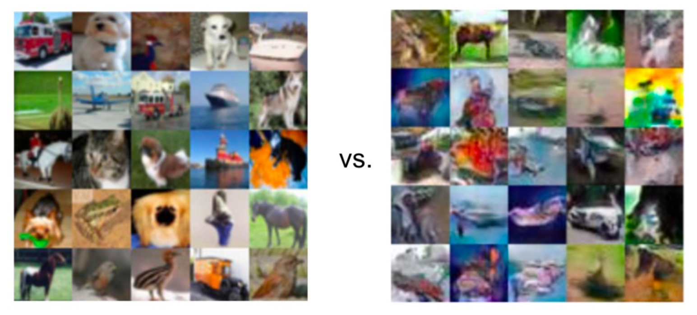
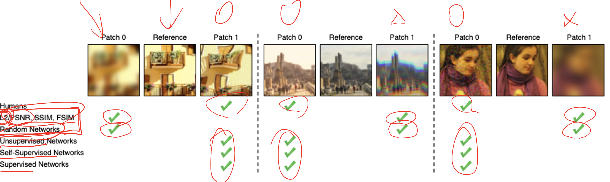

생성모델 평가지표 IS, FID, LPIPS
generative model은 stochastic randomness가 있고, quality를 평가하는 기준이 애매해서 evaluation이 어렵다.
Evaluation : Sharpness x Diversity
둘 중 더 나은 generation은?
{kind=link}
- qualitative analysis
- human evaluation, mechanical Turk : expensive, biased, poor reproducibility
- quantitative evaluation
- IS, FID, MMD, LPIPS
Inception Scores (IS)
- 목표: Sharpness & Diversity 를 만족하는 sample을 원함
- assumption
- labelled dataset으로 학습된 generative model의 sample quality를 평가하는 상황
- for any point x, label y를 잘 predict하는 good probabilistic
classifierc(y|x)가 있다
Inception Scores(Sharpness)

Sharpness가 높다 : classifier가 generated image에 대해 prediction을 할 때 confident하다(class를 분명하게 알 수 있다)

- x가 unconditionally generated 되었다는 가정
- expectation over all samples(fake images)
Inception Scores(Diversity)

Diversity가 높다: generated sample의 predicted class가 다양하다
- $c(y)=E_{x\sim p}[c(y|x)]$ : classifier의 marginal predictive destribution

Inception Scores(Sharpness x Diversity)
$IS=D\times S$
- sharpness와 diversity 두 criterion을 합침
higherIS better quality- classifier가 not availiable이라면 큰 dataset에 대해 학습된 e.g., Inception Net trained on ImageNet dataset 같은 걸 사용
- limitation
- model should be trained on labeled data(training data dependent)
- classifier의 성능에 의존(model-dependent)
Inception Scores 정리

 $$
IS=D\times S=\exp(\mathbb{E}_x KL(p(y|x)||p(y)))
$$
$$
IS=D\times S=\exp(\mathbb{E}_x KL(p(y|x)||p(y)))
$$
D*S를 정리하면 conditional과 marginal probability 사이의 KL divergence와 같다
-
KL Divergence:
$$ D_{KL}(P||Q)=\sum\limits_{x}P(x)log{\frac{P(x)}{Q(x)}} $$
-
Mutual Information : $I(X;Y)=H(X)-H(X|Y)=H(Y)-H(Y|X)$ $=\sum_{x,y}p(x,y)log(\frac{p(x,y)}{p(x)p(y)})$ $=D_{KL}(P(x,y)||P(x)P(y))\geq 0$
-
Cross entropy: $H(P;Q)=\sum\limits_{x\in A_x}P(x)log\frac{1}{Q(x)}$
-
KL Divergence $D_{KL}(P||Q)=\sum\limits_{x}P(x)log{\frac{P(x)}{Q(x)}}$
Frechet Inception Distance (FID)
- Inception score는 $p_\theta$ 로부터 만들어진 sample만 필요
- p_data를 직접적으로 evaluate하지 않고 classifier를 통해 implicit하게 take into account한다
- Frechet Inception Distance(FID)는 $p_\theta$ 와 test dataset로부터 sample된 data point들의 feature representation의 similarity를 측정(e.g., pretrained classifier 로 얻음)
Computing FID
generated sample과 test dataset의 feature representation이 fitting되는 distribution의 distance가 작으면 좋다
-
$\mathcal{G}$ : generated sample
$\mathcal{T}$ : test dataset
-
$\mathcal{G},\mathcal{T}$ 에 대해 feature representation $F_{\mathcal{G}}, F_{\mathcal{T}}$ 를 얻음 (e.g., by prefinal layer of Inception Net)
-
$F_{\mathcal{G}}, F_{\mathcal{T}}$ 에 대해 multivariate Gaussian을 fit
- $(\mu_{\mathcal{G}}, \sum_{\mathcal{G}}),(\mu_{\mathcal{T}}, \sum_{\mathcal{T}})$ : mean, covariance of two Gaussian
-
FID는 이 두 gaussian 사이의 Wasserstein-2 distance
-
trace 안의 부분은 L2 norm과 유사

-
frobenius norm

$A^H :$ conjugate transpose
-
-
FID가 낮을수록 좋은 sample quality (두 gaussian 사이의 distance가 작다는 뜻이니까)
LPIPS

- $x,x_0$ 는 generated sample과 test dataset
- feature의 유사도
- 모든 layer의 값을 sum
- $\hat y^l,\hat y_0^l\in \mathbb{R}^{H_l\times W_l\times C_l}$ : activation at layer l
- $w_l$ : scales/weights for channels in layer l
- 낮을수록 좋음!
- fidelity나 diversity 측면보다는 x와 x_0 사이에 얼마나 차이가 있는지 보는 지표
⭐ Image Space vs Feature Space
{kind=link}
image space 차원에서 모델의 evaluation과 사람의 evaluation은 다를 수 있다. 예를 들어 어떤 이미지의 모든 pixel을 한 pixel씩 옆으로 이동한다고 해보자. 사람의 눈으로는 차이를 구별할 수 없겠지만, 모델이 평가할 때는 모든 pixel값이 다르므로 차이가 있다고 판단할 것이다. 특히 모든 pixel에 대해 L2 loss를 구한다고 치면 그 차이는 더 증폭되고 pixel이 밀린 이미지가 더 낮은 quality의 이미지보다 Loss가 큰 경우도 발생할 수 있다. 이러한 문제를 극복하기 위해, image-space가 아닌 feature-space 즉, pixel level이 아니라 feature level에서 평가하는 방법론이 많다.
Reference
DATA303 Lecture note 15. Evaluating Generative Models